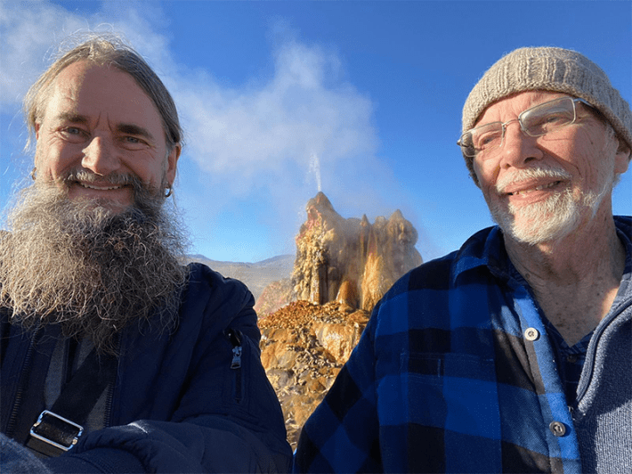
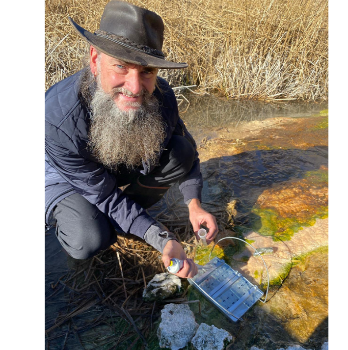
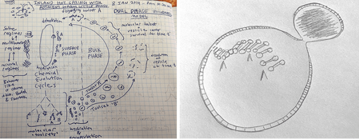

Bruce Damer had theaudience under his Gandalf spell. He was giving a keynote speech in a grand hall at Breaking Convention, a psychedelic-consciousness conference in Exeter, England, in April 2025. Tall and slender, very much bearded, and sporting two large gold hoop earrings, one on either side, Damer looked exactly like you would expect a sexagenarian psychedelic professor to look. A boyishly enthusiastic speaker, he said a psychedelic trip had transported him through time to face a deep trauma.
“If you believe in a ‘mother ayahuasca’ or a healing force, I was allowed to experience my conception and birth and be in my mother’s belly,” Damer said. His birth mother had given him up because she and his father were too poor to raise him. Ayahuasca had released him from the pain. “Being in the belly, I could feel her love, and it healed,” he said.
“As a result of the clarity and the opening of the blockage that had been this sort of knot in my belly, my whole system opened wide,” Damer continued. “And I thought for a moment, I could potentially travel through time to a place where I’ve been working on the question of how life began, the birth of us all.”
As Bruce Damer sees it, psychedelic experiences can lead to scientific breakthroughs.
In psychedelic science, a field dominated by scientists who are loath to be pigeon-holed as too woo-woo, Damer, 63, has become a cult figure by wearing his woo on his sleeve. His adoptive mother described him as “in his own world” when his new parents brought him home. And he has been his own thinker ever since. His science cred is sound: a Ph.D. in computer science from University College Dublin in Ireland, former relationships with Xerox and NASA, and papers published in journals like Astrobiology. Currently he is a research associate in the Department of Biomolecular Engineering at the University of California, Santa Cruz.
The debate around the psychedelic renaissance has been dominated by claims that hallucinogens like psilocybin, LSD, and ayahuasca reach deep into the brain and ease anxiety, depression, and PTSD, especially when coupled with psychotherapy. A steady stream of studies has validated the compelling anecdotal reports, and the laws prohibiting the use of psychedelics are—bit-by-bit in parts of the world—being liberalized as people increasingly turn on, tune in, and feel better.
But Damer contends psychedelics hold potential for more than addressing the mental health crisis. He is driven by the belief that psychedelic drugs can crack open the minds of scientists and other problem-solvers. In 2023, he founded the nonprofit organization the Center for MINDS (Multidisciplinary Investigation into Novel Discoveries and Solutions). Its philosophy: “Psychedelics and other consciousness practices may be our greatest underutilized tool for sparking paradigm-shifting breakthroughs.”
Damer is convinced ayahuasca sparked his own paradigm-shifting breakthrough. In the field of biogenesis, the study of the origin of life, leading scientists maintain life originated 4 billion years ago in the chemical stew of hydrothermal ocean vents. Damer’s hallucinogenic vision showed him life began in freshwater terrestrial hot springs. The “hot-spring hypothesis” for the origin of life, Damer told his audience at the psychedelic conference, “caused a paradigm shift in the science of astrobiology.”
Not long before Damertook the conference stage, he walked me through his long, strange trip in science and psychedelia. We sat in the sunshine on a second-floor deck adjoining the conference hall. Damer drank “functional” mushroom coffee (supposedly medicinal) from a vendor in the exhibition hall so slowly that I could imagine him counting the milligrams of caffeine in each gulp to titrate the doses. “If I drank it all in one go, I’d go to the moon,” he said to me. Damer grew up in Kamloops, a small town in British Columbia, but has spent much of his life in California. He spoke with a nasally West Coast accent that had a whimsical, poetic tilt.
Damer said he considers himself mildly autistic and that he avoided psychedelics until his mid-30s to respect his low tolerance to psychoactive substances and the sanctity of his “eggshell mind.” He long feared that psychedelics could “mess up the machinery that I already have.” But looking back, he considers that “a typical nerd’s” approach to psychedelics. “Oh, I’m doing just fine,” he would tell himself. “I’m writing whole huge code bases. I don’t want to corrupt my system.”

THE TRIPPER AND THE BIOCHEMIST: Bruce Damer and David Deamer at Fly Geyser, a geothermal site in Nevada, where the pair conducted origin-of-life research in 2021. Photo courtesy of Bruce Damer.
Damer studied computer science at the University of Victoria before graduating with a postgraduate degree in electrical engineering from the University of Southern California in 1987. The computer software he wrote in the late ’80s included functionality for a mouse for Xerox, which gave him the chance to work on some of the first graphical interfaces. He went on to found one of the first post-Iron Curtain software labs in Prague, Czechia, in 1991.
Damer established himself as a cyberspace forerunner and helped accelerate the development of early metaverse worlds like The Palace and Digital Space Traveler, one of the first social VR environments where people met as avatars, spoke via voice chat, and manipulated virtual objects in real time. He also began collecting computers en route to having 10,000, stored in a barn in the Santa Cruz Mountains in California, which today is a computer museum called DigiBarn.
This trailblazing work brought Damer into the orbit of Terence McKenna, an ethnobotanist and psychedelic mystic whose teachings are considered lore for psychonauts, and they began corresponding in 1997. Just months before his untimely death from brain cancer at age 53 in 2000, McKenna delivered Damer a giant bag of psilocybin mushrooms. “It was Terence inviting me to hyperspace,” Damer said.
Damer traveled to a hot spring in the southern Sierra Nevada mountains and on the first evening, Damer ate a couple of grams worth—an average dose—and had closed-eye visions of geometric patterns. But he wanted to experience hyperspace, so he then consumed the entire bag of more than 15 grams; a huge dose. “Instantly, you’re gone,” Damer said. “There’s no body, there’s no world, you’re in a void. It was a fantastic experience, but it was hugely terrifying in the beginning. I sang my way through.”
“Suddenly I was more alive, like the light of life was on.”
In the year 2000, Damer achieved one of his dreams and began working as a contractor for NASA. As a child, he experienced “visual downloads” of life in space, which he drew up into illustrations and sent to the space agency. He spent nine years across 25 different contracts designing spacecraft, helping to construct a telerobotic lunar base and simulating space missions in 3-D, including the first reference design for a crewed mission to an asteroid.
As he spent time with the inner circle of the psychedelic research elite and helped manage the late Timothy Leary’s estate, Damer increasingly wondered if tripping could open the doors of perception to life’s origin. He had been pondering the origin of life since he was 14, when he was hiking through the sage brush hills near his home, and spied a mariposa lily emerging from the thawing ground. As he began considering how such beauty could sprout from a simple bulb after a long and sometimes harsh winter, the almost transcendent moment triggered far more than a botanical curiosity.
“I crouched down to study this complex, emergent thing, and I wondered, where did it all come from?” Damer said, recalling his teenage self. “I felt excited that I found the question that really fascinated me: How did life itself begin?” He resolved to one day answer this totemic question. “I felt, ‘I’ve got a mission.’ ”
In 2013, his mission had liftoff.
That year, Damer camped in the Amazon, in a remote retreat center in eastern Peru. Inside a wooden maloca—a wooden teepee shaped structure—and guided by Indigenous shamans, Damer spent days drinking the foul-tasting ayahuasca, a brew of two hallucinogenic Amazonian plants.
One evening, a full moon hung over the rainforest. Amid the sounds of monkeys, grasshoppers, and the shamans’ chants to forest spirits, Damer saw madre ayahuasca. He asked her, “Would you like to do this? How about we join together and travel and try to figure out how we were all born?”
Before he knew it, Damer experienced a vision of himself sling-shotting back through his life, conception, and witnessed “a sperm swimming backward into various ancestors.” He was pulled backward through 4 billion years of evolutionary time until he reached a dense microbial cloud. He burst through the vapor and arrived in a harsh Hadean landscape; a hot, volcanic world with freshwater hot springs filled with a primordial soup under a sky streaked with meteors and chemical haze.
There, he invited the madre to help him become a protocell—a simple version of a cell, composed of polymers—large molecules that are a blend of simpler ones. Damer became this protocell at the edge of a hot spring, a shallow, sun-bathed pool that experiences constant cycles of wetting and drying. Inside this form, he felt the wobble of one of the polymers. The sensation felt like a chemical system was booting up. In the vision, he watched himself split, merge, dry out, and rehydrate. “My body was this undulating, amphiphilic sac just stretching out in front of me,” Damer said.
A large part of the sac suddenly detached and a set of neon polymers appeared. Damer screamed as he spotted a dying polymer inside the sac, visibly closing as it floated away. But that only seemed to give his own sac more vitality as he watched how the polymers undulated. “Suddenly I was more alive, like the light of life was on,” he said.

IN THE FIELD: Bruce Damer has repeatedly done field experiments at geothermal sites to test his visions of how life on Earth began, including at Fly Geyser in Nevada, where he collected water samples in 2021. Photo courtesy of Bruce Damer.
For months afterward, Damer attempted to decrypt the otherworldly scene. Then, in December 2013, during an ethereal breathwork practice—perhaps ironic as there was no breathable oxygen on the Hadean Earth in the beginning—he entered a state of reverie. He realized, he said, the dissolution of the polymers inside the protocells “was a necessary step to the first living, reproducing cells.”
Biological life could never get started if the protocells continued to divide and their contents floated away. But Damer imagined millions of protocells huddled together. When a division failed and a protocell disgorged its polymers, they would be absorbed and conserved in the surrounding molecular soup. In his reverie, Damer witnessed the protocells nestled together, “with the walls between them fusing and forming a new layered phase,” he said.
In his vision, Damer said, he “watched systems of selected polymers perform the first functions of biology, including catalyzing reactions, storing information, and making copies of other polymers.” This took place in different parts of a pool and among interconnected pools. Damer reasoned the different pools “would provide a variety of resources and different selective environments,” enough to build a heritable, early genome.
“Selection was the sole hand at work and it was a powerful force, entirely sufficient to create life and all of its progeny, including us,” Damer said.
Back in 1871, CharlesDarwin—12 years after publishing On the Origin of Species—wrote to his close friend, botanist Joseph Dalton Hooker. Darwin proposed that the “first production of a living organism” may have been conceived “in some warm little pond.”
Just under 70 years later, in 1953, an experimental stimulation to replicate the supposed conditions of the prebiotic Earth was undertaken in a glass flask by chemist James Miller and Nobel laureate Harold Urey. The resultant study, published in Science, documented how amino acids and other complex organic molecules could form from simple ones.
At some point, far more complex information-bearing molecules—RNA and DNA—had to emerge from the primordial soup and begin copying themselves. That catalytic leap is at the crux of origin-of-life science.
Most research since the Miller-Urey era is effectively split into two rival camps about where that chemistry could have occurred. One argues for deep-sea hydrothermal vents: mineral-rich, energy-loaded environments where alkaline fluids and porous rocks could have concentrated organic molecules and driven early metabolic reactions. The other points to Damer’s place, terrestrial hot springs, whose constant cycles of wetting and drying, experiments have shown, can knit molecules into longer polymer chains. This theory is championed chiefly by biochemist David Deamer, a biologist and research professor of Biomolecular Engineering at the University of California, Santa Cruz.
Damer’s ayahuasca vision was clearly primed by Deamer. Years before his experience in the Amazon, Damer had read Deamer’s work. The two met in person in 2009 when Deamer read a magazine article about Damer’s gargantuan collection of computers, including a six-ton Cray supercomputer. He was fascinated that one man could own a living evolutionary tree of computation. He invited him to dinner at his home in Santa Cruz County. After dinner, Deamer took Damer into the next room where he had a 24-chamber system to hydrate and dry environments to model the beginning of life.
In the vision, he watched himself split, merge, dry out, and rehydrate.
Soon after, they held fortnightly meetings at Deamer’s home. “Bruce and I are a good team because my professional background is in chemistry and my research involves chemical and physical reactions, and Bruce’s background involves big picture scenarios,” Deamer told me. However, they constantly faced a stumbling block over how polymers could fuse and evolve. That process required a “kinetic trap,” a steady state in which the synthesis of polymers exceeded their decomposition.
Then came Damer’s vision. “I drew it out, and I wrote pages of notes to Dave on email,” Damer said. “He wrote back, ‘You found it. You found a kinetic trap. This is the way the polymers can get more complex and not break down.’ It was the eureka moment for me.”
In 2015, Damer and Deamer co-published their first paper together in Life, an open-access journal. The paper describes how hot-spring pools dry and refill, concentrating organics, polymerizing them, and packaging them into protocells. Their hypothesis spurred a 2017 Scientific American cover story: “The New Origins of Life: Did volcanic hot springs harbor the first living organisms?”
{kind=link}
Never content, Damer traveled to Rotorua, a geothermal park in New Zealand, to test the theory. He prepared vials with the ingredients needed to assemble strands of RNA, and used a pipette to run wet-dry cycles to test whether cycled hot spring water would react to produce life. “A bunch of geologists said it would never work,” Damer told me. “I did four cycles, dried the vials down and took them home. And it worked. There was large productivity of yields of RNA polymers.” Five years after seeing a hot spring in his ayahuasca vision, he said, “I found such a pool.”
After these experiments, Damer and Deamer published their magnum opus in 2020, “The Hot Spring Hypothesis for an Origin of Life,” for the cover of the journal Astrobiology, advancing the hypothesis that life didn’t begin in hydrothermal ocean vents but was spawned on terrestrial Earth.
For years, Damer didn’tdare risk “coming out of the psychedelic closet,” he said. He didn’t want to risk losing science grants or alienating journal editors by publicizing that his insight into dissembling protocells stemmed from tripping on ayahuasca. But with the publication of his and Deamer’s “Hot Spring Hypothesis,” he felt his standing in the science community was secure.
In 2022, at a conference on psychoactive drugs held by Dennis McKenna, the late Terence McKenna’s brother, Damer spoke for the first time about how he “employed ‘these medicines’ for my own science.” He called his presentation “High Time for Science” and said he hoped his ayahuasca experience could inspire others to see psychedelics as “elixirs of discovery.”

SKETCHES OF GENESIS: Bruce Damer translated his psychedelic-inspired visions into these sketches of how life could have originated and evolved in terrestrial hot springs; to the right, a protocell in the process of budding.
In a subsequent essay of the same name, Damer spelled out the history of employing psychedelics in science. One example came from the 1960s when engineer Willis Harman had 27 people, including engineers, physicists, and mathematicians, take LSD and undergo tests of creativity. Harman wrote the psychedelic trip for the scientists inspired “creative problem-solving,” particularly in the “illumination phase,” and their creative high lasted for weeks afterward.
Damer expanded his survey with references to Francis Crick, co-discoverer of the molecular shape of DNA, and Steve Jobs, who experienced new insights while high on LSD. He mentioned perhaps the most famous tripping scientist of all, Kary Mullis, who won the Nobel Prize in 1993 for inventing the polymerase chain reaction technique. PCR allows scientists to make millions of copies of a specific segment of DNA from just a tiny sample, which turned out to be a key to sequencing the human genome. Mullis credits LSD with enabling the greater mental flexibility that contributed to his breakthrough. “Would I have invented PCR if I hadn’t taken LSD? I seriously doubt it,” he said in 1994. “I could sit on a DNA molecule and watch the polymers go by. I learned that partly on psychedelic drugs.”
In the essay, Damer delved into recent neuroscientific experiments that offer theories of how psychedelics unlock creativity. He cited research by psychopharmacologist Robin Carhart-Harris and theoretical neuroscientist Karl Friston, who propose psychedelics unwire the brain’s prior beliefs and assumptions. The liberated brain is free to absorb new sensory experiences, which, the scientists write, “increases the potential for ‘out of the box’ ideas, novel ideas, and new perspectives.”
David Deamer laughed. “I don’t interact with Bruce on his pharmaceutical adventures.”
Glowing testaments to psychedelics as elixirs of discovery can quickly dissolve into magical thinking. And neuroscience deemed to offer evidence of how psychedelics rewire the brain for novel insights is being met by research that says not so fast: Differences in brain scans of trippers and non-trippers are inconclusive. Damer himself is aware that psychedelic reveries must be anchored in hard science. In “High Time for Science,” he wrote, with a splash of poetry, “The transcendent beauty of an equation that defines the structure of the universe, or a chemical cycle that has the power to initiate life must land in the proscribed, bland language of peer-reviewed journal articles and testable hypotheses.”
The two sides of Damer, the psychonaut and the scientist, endear him to Deamer. When I asked Deamer what he thought of Damer’s travels in psychedelia, he laughed. “Oh, I don’t know anything about that. That’s a separate part of Bruce’s life. I don’t interact with Bruce on his pharmaceutical adventures. He knows it changes your brain for a little while, and might make you more creative, but I left that behind in my college career. I tried LSD. And I said, ‘I don’t like my brain doing these things. I like my brain just as it is.’ ”
Deamer, though, had to admire Damer’s trip through the looking glass. “We don’t know how consciousness works,” Deamer said. “Nobody does. Maybe there is stuff that can be discovered by psychedelic experiences.” Deamer and Damer are alike. “Bruce and I are in love with ideas,” Deamer said. “We’re in love with the universe and the mysteries around us. Some human minds just love ideas. They love things happening in their brain. They’re paying attention to it. They’re putting things together and getting new insights. We’re doing psychedelics with our brains.”
The reality is Deamer and the psychedelics-inspired Damer may very well be right about the origin of life on Earth. They may never win over scientists like Nick Lane, an evolutionary biochemist at University College London, who argues life needed the singular mix of physics and chemistry in hydrothermal ocean vents to originate. As recently as 2024, Lane and chemist Joana C. Xavier of Imperial College London explained in Nature that the wet and dry cycles of hot springs, key to Deamer’s and Damer’s hypothesis, could not lead to “the network of hundreds of reactions that keeps all cells alive.”
However, biologist Jack Szostak, a Nobel laureate, whose lab at the University of Chicago focuses on the origin of life, told me it’s likely that life did begin in volcanically active regions or impact craters on Earth’s surface. “Deep sea hydrothermal vents are not a plausible site for the origin of life,” he said. “Geothermally active areas,” he added, “are attractive because they do provide the environmental fluctuations needed to drive the primordial cell cycle.” Synthetic biologist Kate Adamala, from the University of Minnesota, who builds artificial protocells to probe how life might have first taken shape, agreed. “I’m on Team Dave and Bruce,” she said.
Presented with either criticism or praise of his origin-of-life theory, Damer remained as sanguine as ever. “You’re never going to have a complete understanding of the origin of life on the early Earth, because we just can’t reproduce the exact conditions,” he said. Of course, he believed the hot springs hypothesis would stand the test of time.
Regardless of what time does tell, Damer’s charm will live on. His willingness to entertain the possibility that meaningful scientific insight might emerge from altered states of consciousness has opened a door that few researchers dare approach—a door which he boldly stepped through. Psychedelics are like telescopes that bend the path of light to bring faraway objects into sight, Damer said. “They are a metaphor for shaping the lens of the mind. Suddenly new things come into view.” 
Lead photo: Bruce Damer at Breaking Convention, a psychedelic-consciousness conference, 2025. Credit: James Wills.